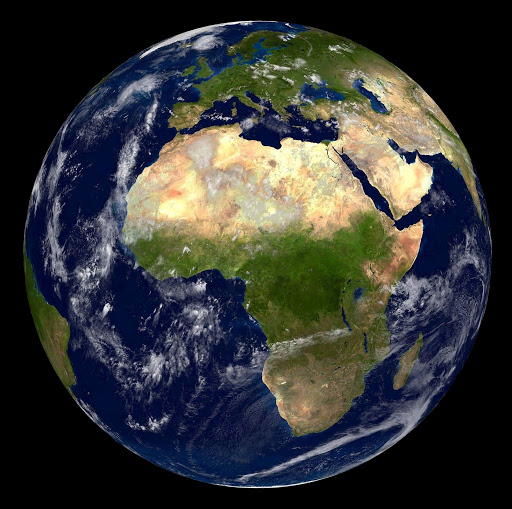

Type : planète tellurique (rocheuse)
Satellites : 1 (la Lune)
Masse : 6,0.1024 kg
Diamètre : 12 750 km
Densité : 5,51
Distance au soleil : 149,6 millions de km
Période de rotation : 23 h 56 min
Période de révolution : 365,25 j
Pression atmosphérique : 1 atm
Températures :
moy=15°C, min=-93°C, max=56°C
Enveloppes internes de la Terre :
| Nom | Dimensions | Composition |
|---|
| Croûte | 10 à 60 km
d'épaisseur | O, Si, Al
solide |
| Manteau | 2850 km
d'épaisseur | O, Mg, Si
solide |
| Noyau externe | 2210 km
d'épaisseur | Fe,Ni
liquide |
| Noyau interne | 1280 km
de rayon | Fe,Ni
solide |
La Terre
La Terre est parfois qualifiée de "planète bleue" : 71 % de sa surface est couverte par des océans d'eau salée qui constituent en partie l'hydrosphère. De la glace ou des banquises recouvrent en partie les pôles.
La Terre abrite des millions d'espèces vivantes dont les humains.
La biosphère de la Terre a fortement modifié l'atmosphère, en l'enrichissant en O2, permettant la prolifération d'organismes aérobies de même que la formation d'une couche d'ozone qui bloque une partie des rayons ultraviolets (UV) solaires.